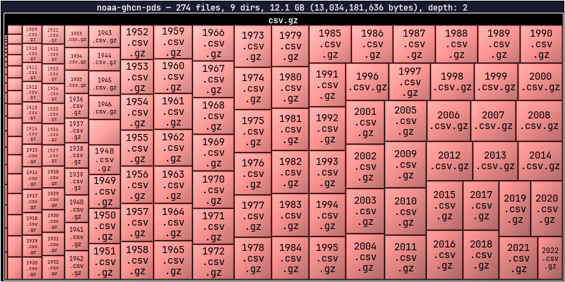
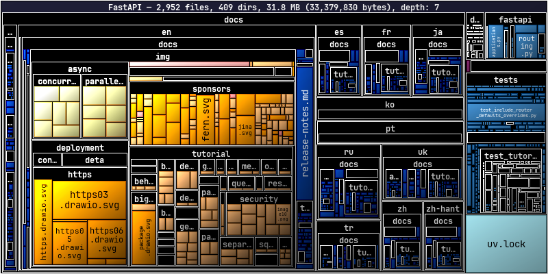
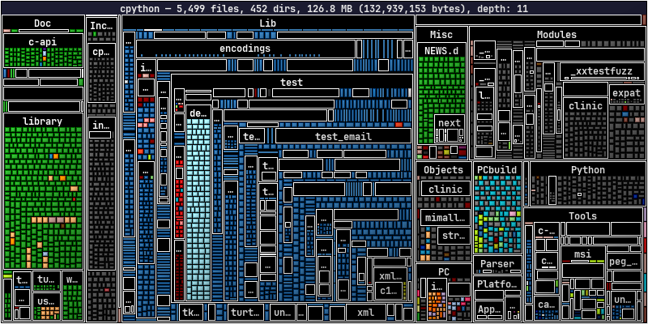
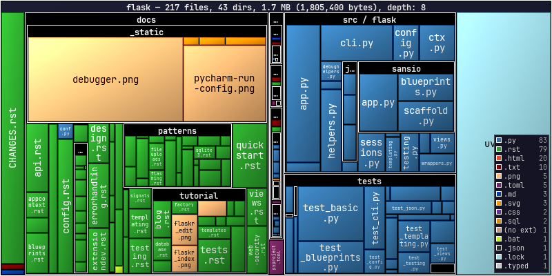
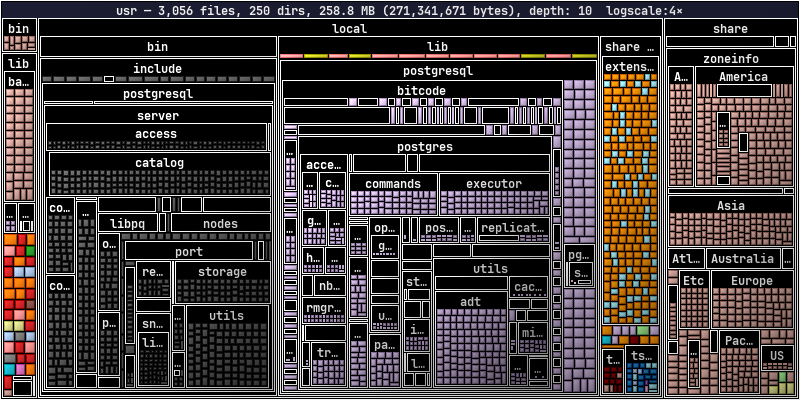
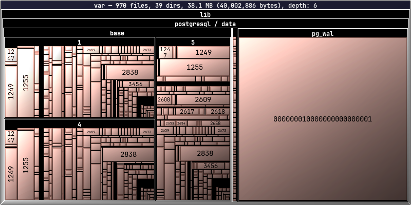

Remote Sources¶
← Home
dirplot can scan directory trees on remote sources without copying files locally. Remote backends are optional dependencies — see Installation for what to install per backend.
Warning: Remote trees can contain hundreds of thousands of files. Use
--depth Nto limit how far down the tree dirplot recurses until you have a feel for the size of the target. Start with--depth 3.Tip: If one large file dominates the layout and squashes everything else into tiny slivers, add
--log-scale 4to compress the size range. Values in the range 2–10 are most useful.
Remote Servers via SSH¶
Scan hosts reachable over SSH using paramiko.
Usage¶
# ssh://user@host/path format
dirplot map ssh://alice@prod.example.com/var/www
# SCP-style user@host:/path format
dirplot map alice@prod.example.com:/var/www
# Exclude paths, cap depth, save to file
dirplot map ssh://alice@prod.example.com/var --exclude /var/cache --depth 4 --output remote.png --no-show
Authentication¶
Credentials are resolved in this order:
--ssh-key PATH— explicit private key fileIdentityFilefrom~/.ssh/configfor the target host- ssh-agent (picked up automatically)
--ssh-password-file FILE— file containing the SSH password- Interactive password prompt as a last resort
SSH config¶
~/.ssh/config is read automatically. Host aliases, custom ports, and IdentityFile directives all work as expected:
Options¶
| Flag | Default | Description |
|---|---|---|
--ssh-key |
standard SSH key paths | Path to SSH private key |
--ssh-password-file |
— | File containing SSH password |
--depth |
unlimited | Maximum recursion depth |
AWS S3¶
Scan S3 buckets using boto3. File sizes come from S3 object metadata — no data is downloaded.
Usage¶
# Scan a bucket prefix
dirplot map s3://my-bucket/path/to/prefix
# Scan an entire bucket
dirplot map s3://my-bucket
# Public bucket (no AWS credentials needed)
dirplot map s3://noaa-ghcn-pds --no-sign
# Use a named AWS profile, cap depth, save to file
dirplot map s3://my-bucket/data --aws-profile prod --depth 3 --output s3.png --no-show
Authentication¶
boto3's standard credential chain is used automatically — no extra configuration needed if your environment is already set up for AWS. Credentials are resolved in this order:
--aws-profile(orAWS_PROFILEenv var) — named profile from~/.aws/configAWS_ACCESS_KEY_ID/AWS_SECRET_ACCESS_KEYenvironment variables~/.aws/credentialsfile- IAM instance role (on EC2 / ECS / Lambda)
--no-sign— skip signing entirely for anonymous access to public buckets
--aws-profile takes precedence over AWS_PROFILE and all lower-priority methods in the chain.
Options¶
| Flag | Default | Description |
|---|---|---|
--aws-profile |
AWS_PROFILE env var |
Named AWS profile |
--no-sign |
off | Anonymous access for public buckets |
--depth |
unlimited | Maximum recursion depth |
--exclude |
— | Full s3://bucket/key URI to skip (repeatable) |
Public buckets to explore¶
These buckets are publicly accessible with --no-sign. Use --depth 2 or --depth 3 on large buckets to avoid long scan times.
| Bucket | Contents | Quick start |
|---|---|---|
s3://noaa-ghcn-pds |
NOAA Global Historical Climatology Network | dirplot map s3://noaa-ghcn-pds --no-sign --depth 2 |
s3://noaa-goes16 |
NOAA GOES-16 weather satellite imagery | dirplot map s3://noaa-goes16 --no-sign --depth 3 |
s3://sentinel-s2-l1c |
Copernicus Sentinel-2 satellite data (eu-central-1) | dirplot map s3://sentinel-s2-l1c --no-sign --depth 2 |
s3://1000genomes |
1000 Genomes Project | dirplot map s3://1000genomes --no-sign --depth 3 |

dirplot map s3://noaa-ghcn-pds --no-sign --depth 2GitHub Repositories¶
Scan any GitHub repository using the Git trees API. File sizes come from blob metadata — no file content is downloaded. No extra dependency is required; dirplot uses urllib from the Python standard library.
Usage¶
# github:// scheme
dirplot map github://owner/repo
# Specific branch, tag, or commit SHA
dirplot map github://owner/repo@dev
# Full GitHub URL (also accepted)
dirplot map https://github.com/owner/repo/tree/main
Authentication¶
A token is not required for public repositories under normal use. Each scan makes 1–2 API calls, and GitHub allows 60 unauthenticated requests per hour per IP. A token is needed when:
- Scanning private repositories
- Running in CI/CD where many processes share the same IP
- Scanning repeatedly and hitting the unauthenticated rate limit
Option 1 — gh CLI (easiest): authenticate once and dirplot picks up your credentials automatically:
Option 2 — environment variable:
Option 3 — token file:
Token resolution order: --github-token-file → $GITHUB_TOKEN → gh auth token.
Options¶
| Flag | Default | Description |
|---|---|---|
--github-token-file |
$GITHUB_TOKEN |
File containing personal access token |
--depth |
unlimited | Maximum recursion depth |
--exclude |
— | Repo-relative path to skip (repeatable) |
Notes¶
- Dotfiles and dot-directories (
.github,.env, etc.) are skipped, consistent with local scanning behaviour. - If the repository tree exceeds GitHub's API limit (~100k entries), the response will be truncated. dirplot prints a warning and renders what was returned. Use
--depthto avoid this. - The
--depthflag here applies to the in-memory tree built from the API response, not to the number of API calls (the full flat tree is always fetched in one request).

dirplot map github://tiangolo/fastapi
dirplot map github://python/cpython
dirplot map github://pallets/flask --legendGoogle Drive¶
Scan a Google Drive using the gog CLI — a unified Google Workspace CLI that handles OAuth2 authentication. No extra Python dependency is needed; dirplot shells out to gog the same way the Docker backend uses docker exec.
Setup¶
Usage¶
# Scan your entire Drive (My Drive + shared drives)
dirplot map gdrive://
# Scan with depth limit (recommended for large drives)
dirplot map gdrive:// --depth 3
# Scan a specific folder by its Drive folder ID
dirplot map gdrive://1BxiMVs0XRA5nFMdKvBdBZjgmUUqptlbs74OgVE2upms
# Display inline in terminal
dirplot map gdrive:// --depth 3 --log-scale 4 --inline
To find a folder ID: open the folder in Google Drive in your browser — the ID is the long string at the end of the URL (https://drive.google.com/drive/folders/<FOLDER_ID>).
Notes¶
- Google-native formats (Docs, Sheets, Slides, Forms, …) have no byte size in the Drive API. dirplot shows them as 1 byte so they remain visible as tiles rather than disappearing.
- Authentication is handled entirely by
gog. Rungog authonce; tokens are cached and refreshed automatically. - Large drives can contain tens of thousands of files. Use
--depth Nto limit the scan until you have a feel for the size. - Dotfiles and dot-directories are skipped, consistent with local scanning behaviour.
Options¶
| Flag | Default | Description |
|---|---|---|
--depth |
unlimited | Maximum recursion depth |
--exclude |
— | Path pattern to skip (repeatable) |
--log-scale |
0 (off) | Useful when a few large files dominate the layout |
Docker Containers¶
Scan a running Docker container's filesystem using docker exec. No extra dependency is required beyond the docker CLI being in PATH.
Usage¶
# docker://container/path — slash separator
dirplot map docker://my-container/app
# docker://container:/path — colon separator (both forms accepted)
dirplot map docker://my-container:/app
# Real example
docker run -d --name pg-demo -e POSTGRES_PASSWORD=x postgres:17-alpine
dirplot map docker://pg-demo:/usr --inline
docker rm -f pg-demo
Requirements¶
dockerCLI inPATH- The container must be running (
docker psshould list it) - The container image must have a
findbinary (true for all common Linux base images)
Notes¶
- Symlinks are skipped.
- Dotfiles and dot-directories are skipped, consistent with local scanning behaviour.
findis first attempted with GNU find's-printffor efficiency; if that fails (BusyBox/Alpine images), a POSIXsh+statfallback is used automatically.
Options¶
| Flag | Default | Description |
|---|---|---|
--depth |
unlimited | Maximum recursion depth |
--exclude |
— | Absolute path inside the container to skip (repeatable) |

dirplot map docker://pg-demo:/usr --log-scale 4Kubernetes Pods¶
Scan a running Kubernetes pod's filesystem using kubectl exec. No extra dependency is required beyond kubectl being in PATH and configured to reach a cluster.
Usage¶
# Default namespace
dirplot map pod://my-pod:/app
# Explicit namespace via URL or flag
dirplot map pod://my-pod@staging:/app
dirplot map pod://my-pod:/app --k8s-namespace staging
# Multi-container pod — pick a specific container
dirplot map pod://my-pod:/app --k8s-container sidecar
# Real example (minikube)
minikube start
kubectl run pg-demo --image=postgres:17-alpine --restart=Never --env POSTGRES_PASSWORD=x
kubectl wait --for=condition=Ready pod/pg-demo --timeout=90s
dirplot map pod://pg-demo/var/lib/postgresql --inline
kubectl delete pod pg-demo --grace-period=0
Requirements¶
kubectlCLI inPATH, configured for a reachable cluster- The pod must be in
Runningstate - The pod image must have a
findbinary (true for all common Linux base images)
Notes¶
- Symlinks are skipped.
- Dotfiles and dot-directories are skipped, consistent with local scanning behaviour.
- Unlike Docker scanning,
-xdevis intentionally omitted so that mounted volumes (emptyDir, PVC, etc.) within the scanned path are traversed — this is the common case in k8s where images declareVOLUMEentries that k8s always mounts separately. findis first attempted with GNU find's-printf; if that fails (BusyBox/Alpine images), a POSIXsh+statfallback is used automatically.
Options¶
| Flag | Default | Description |
|---|---|---|
--k8s-namespace |
current context default | Kubernetes namespace |
--k8s-container |
pod default | Container name for multi-container pods |
--depth |
unlimited | Maximum recursion depth |
--exclude |
— | Absolute path inside the pod to skip (repeatable) |

dirplot map pod://pg-demo/var/